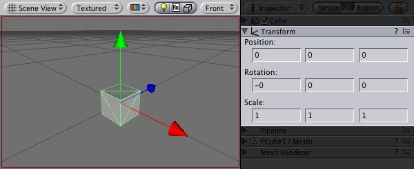
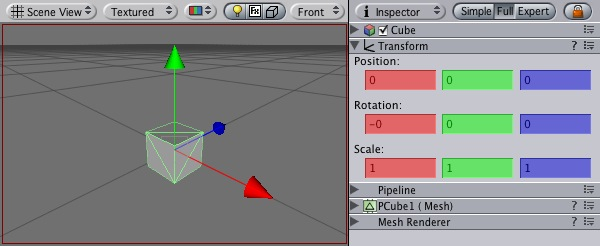
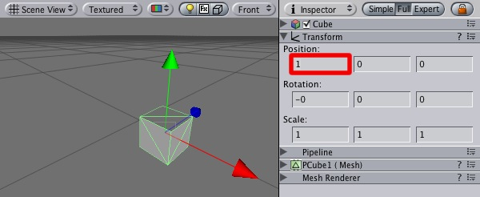
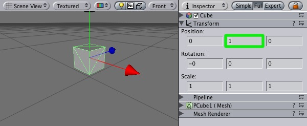
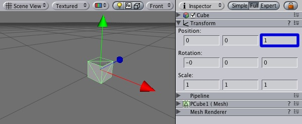
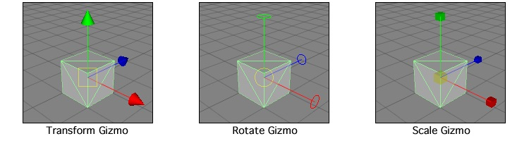
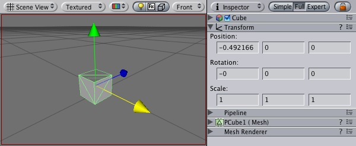

Previous
Previous
The Transform component determines the physical location, rotation, and scale of all objects in the scene. Every object has a Transform.

The Transform component of the Game Object is viewable and editable in the Inspector
Properties
| Property: | Function: |
|---|---|
| Position of the Transform in X, Y, and Z coordinates | |
| Rotation of the Transform around the X, Y, and Z axes, measured in degrees | |
| Scale of the Transform along X, Y, and Z axes. Value "1" is the size at which the object was imported. |
Using Transforms
Transforms are always manipulated in 3-D space using X, Y, and Z axes. In Unity, these axes are represented by the colors red, green, and blue respectively.

Color-coded relationship between 3 axes and Transform properties
Transform components can be directly manpulated using the Scene view or the Inspector. The Inspector will list the properties stated above for easy editing.

Translation along the X axis (Left/Right)

Translation along the Y axis (Up/Down)

Translation along the Z axis (Forward/Backward)
You can also modify Transforms in your Scene by interacting with them, using the Move, Rotate, and Scale tools. These tools are located in the upper left-hand corner of the Unity UI.
The View, Translate, Rotate, and Scale tools
The tools will be usable on any object in your scene. Click on the object, and you will see the tool gizmo appear around it. Depending on the current tool, the gizmo will look slightly different. Clicking the object will also cause the Transform component to become visible in the Inspector. If the Inspector does not display the Transform component or its properties, then you do not have an object highlighted in the scene view.

Different Gizmos for the 3 tools can be directly edited in Scene view
To manipulate the Transform, click and drag on one of the 3 gizmo axes, you'll notice its color changes to yellow. As you drag the mouse, you will see the object translate, rotate, or scale along the axis. When you release the mouse button, you'll notice that the axis remains yellow. You can click the middle mouse button and drag the mouse to manipulate the Transform around the yellow axis. To access all 3 axes at once click and drag the center point of all 3 gizmos.

Any individual axis will change yellow when you click on it
Parenting
Parenting is one of the most important concepts to understand when using Unity. It is a method of attaching two or more objects together, creating a "Parent" and a "Child" or "Children" Each object can have multiple children, but only one parent.
The principle behind parenting is simple; you can attach objects to each other - just like your arms are attached to your body. When you turn your body, your arms move. An object can only have one parent (just like each of your arms can only be attached to one body), but each object can have many children (your body does have two arms, after all).

Example of the Parenting concept
In the above example, we say that the arms are parented to the body, and the hands are parented to the arms. The scenes you make in Unity will contain collections of these Transform hierarchies. The topmost parent object is called the Root object. When you move, scale, or rotate a parent, all the changes in its Transform are applied to its children as well.
You can build compound objects by parenting multiple separate objects together, like the skeletal structure of a human ragdoll. You can also create small yet effective objects with single parents. For example, if you have a horror game that takes place at night, you can create an effective atmosphere with a flashlight. To create this object, you would parent a spotlight Transform to the flashlight Transform. Then, any alteration of the flashlight Transform will affect the spotlight, creating a convincing flashlight effect.
Creating and removing parents is performed in the Hierarchy window. The hierarchy window will display all the objects currently in your scene. To create a parent, drag the desired child object over the desired parent object in your Hierarchy, and release. You have then parented your child to its new parent. To remove the child from its parent, click and drag the child object outside of the parent object.
Importance of scale
The scale of the Transform determines the difference between the size of your mesh in your modeling application, and the size of your mesh in Unity. The mesh's size in Unity (and therefore the Transform's scale) is very important, especially during physics simulation. There are 3 factors that can determine the scale of your object:
- The size of your mesh in your 3D modeling application
- The Global scale setting in your Import Settings menu
- The scale values of your Transform component
Ideally, you should not adjust the scale of your object in the Transform component. The best option is to create your models at real-life scale, so you won't have to change your Transform's scale. The second-best option is to adjust the scale at which your mesh is imported in the Import Settings for your individual mesh. Certain optimizations occur based on the import size, and instantiating an object that has an adjusted scale value can decrease performance. For more information, read through the Rigidbody component's section on optimizing scale.
Hints
- When parenting Transforms, make sure the new parent is located at 0,0,0 before applying the child. This will save you many headaches later.
- Particle systems are the only type of Transform that are not affected by Scale. In order to scale a particle system, you need to modify the particle emitter, animator and renderer properties.
- If you are using Rigidbodies for physics simulation, there is some important information about the Scale property to be read on the Rigidbody page.
- You can change the colors of the axes (and other UI elements) from the Unity Menu -> Preferences -> Colors & keys.
- If you can avoid scaling, avoid scaling. Try to have the scales of your object finalized in your 3D modeling application, or in the Import Settings of your mesh.